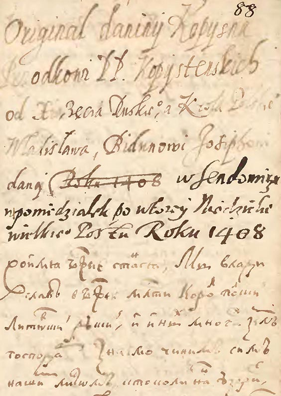
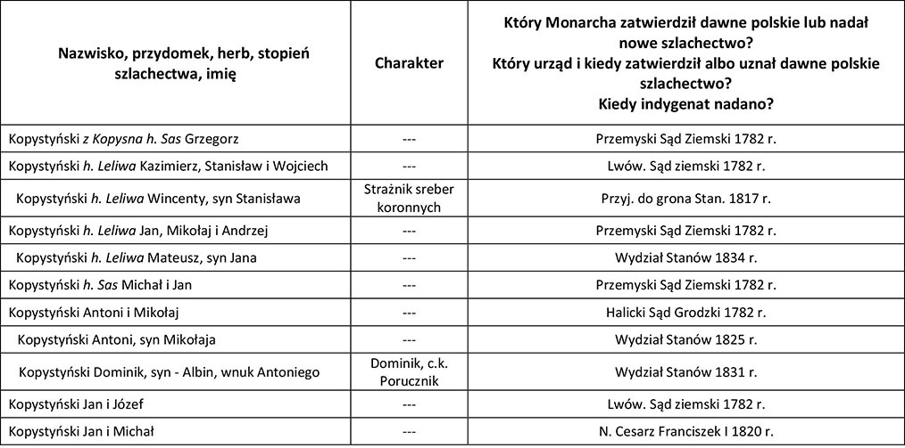

Kopysno [1] musiało istnieć już w XIV * wieku, gdyż jak wynika z dokumentu z 12 marca 1408 r. [pisany po rusku], kiedy król Władysław Jagiełło nadał Józefowi Bieduniowi, swemu rycerzowi za jego wierną służbę miejscowość Kopysno, były już tam obiekty, które nie mogły powstać w krótkim okresie. W akcie czytamy o nadaniu "horodyszcza Kopystno, cerkwi pw. Pokrowy Matki Bożej, dworzyszcza pustego zwanego Bodnarskie pod horodyszczem, lasu Struczyna, łąk Mochowisko Małe i Duże, żeby służyły dworzyszczu." ("Акты Южной и Западной Руси". Т.1, С.-Петербург,1863, С.6 - sedmitza.ru, plik pdf, s.6; "Kopiariusz przywilejów, dekretów i różnych akt odnoszących się do dóbr rodziny Kmitów z lat 1397-1601" - www.dbc.wroc.pl [1a], [1b].) W zamian za to Józef Biedun i jego potomkowie m.in. mieli być gotowi oddać na służbę w wojsku dwóch łuczników. Prawdopodobnie, kierując się nazwą wsi, przyjął on później nazwisko Kopystyński, z którym utożsamiali się wszyscy jego potomkowie. Jak twierdzi Pamwo Berynda, Biedun był człowiekiem silnym i wojowniczym (zob. irbis-nbuv.gov.ua - plik pdf, s.68; litopys.org.ua).
Z aktu nadania wsi dowiadujemy się, że były w niej stawy, a mieszkańcy trudnili się pszczelarstwem - w leśnych dąbrowach funkcjonowały pasieki **.

Fragment dokumentu nadania wsi ("Kopiariusz przywilejów, dekretów i różnych akt odnoszących się do dóbr rodziny Kmitów z lat 1397-1601" - www.dbc.wroc.pl [1b] ).
Kopysno pierwotnie było lokowane na prawie ruskim (wg Akta ... co najmniej do 1473 r.). W późniejszym okresie miejscowość podlegała prawu wołoskiemu.
13 marca 1415 r. starosta ruski Iwan Śremski w obecności świadków dokonał rozgraniczenia gruntów królewskich miejscowości Brylińce od Kopysna, będącego we władaniu rodziny Kopystyńskich (Zachary, Lewkow, Malew). Potwierdza to tekst pisany w języku staroruskim:

Źródło: Олег Купчинський - "Забуті та невідомі староукраїнські грамоти XIV — першої половини XV ст." - zob. chtyvo.org.ua; www.dbc.wroc.pl (strony 191-192).
W roku 1490 właścicielem Kopysna był Kuźma Kopysteński (sanockabibliotekacyfrowa.pl s. 103, skan 111).
Przez kilka wieków wieś stanowiła gniazdo rodu Kopystyńskich [2] ***, którego najwybitniejszym przedstawicielem był Michał Kopystyński (zm. 1609 r. - Stanisław Kryciński “Słownik Krajoznawczo-Historyczny”, Warszawa 1992; zob. genealogia.okiem.pl, vysochanskiy-sas.com, irbis-nbuv.gov.ua - plik pdf, ss. 67-81), ostatni prawosławny biskup (władyka) przemyski, zagorzały przeciwnik unii brzeskiej (Więcej - Kwartalnik Historyczny - str. 547 i nast.). Zachował się dokument króla Zygmunta III Wazy z 20 maja 1591 r., polecający Michała Kopystyńskiego na biskupa przemyskiego - skany.przemysl.ap.gov.pl.
W roku 1573 Łazarz i Iwan Kopystyńscy podzielili pomiędzy siebie dobra Kopysna. W 1599 r. jak podają źródła, Jacko Iwanowicz Kopystyński sprzedał swą część Kopysna Janowi Tomaszowi (nazwisko nieczytelne), referendarzowi koronnemu.
W 1600 roku Michał Kopystyński wraz z Tomaszem i synem Teodorem sprzedali swe części w Kopysnie Drohojowskiemu. W 1606 r. kolejna część Kopysna należała już do Łukasza i Klemensa Krzeczkowskich. Pod koniec lat 20-tych XVII w. cała wieś stała się własnością kasztelana sanockiego - Andrzeja Boguskiego [3]. W 1651 r. po jego śmierci przeszła w ręce żony Marianny, a następnie jej córki o tym samym imieniu.
W I połowie XVII w. 460 morgów (266,8 ha) było we władaniu chłopów.
W roku 1696 Hieronim Augustyn Lubomirski nabył miejscowość Rybotycze i stworzył wraz z Kopysnem tzw. klucz rybotycki obejmujący w różnych okresach 4 folwarki i 7 wsi (Posada, Borysławka, Kopysno, Jamna, Trójca, Łomna, Krajna).
Według publikacji "Stosunki społeczno-gospodarcze w dobrach małopolskich księcia Jerzego Ignacego Lubomirskiego w pierwszej połowie XVIII wieku" (zob. sanockabibliotekacyfrowa.pl) pogłowie bydła w Kopysnie przedstawiało się następująco:
-1703 r. - 30 krów, 14 jałowic, 1 buhaj, 13 ciołków i jałówek, 6 cieląt, 19 wołów i wolców (razem 83 szt.);
- 1706 r. - 34 krowy, 33 jałowice, 1 buhaj, 6 ciołków i jałówek, 13 cieląt, 40 wołów i wolców (razem 127 szt.);
-1707 r. - 18 krów, 27 jałowic, 1 buhaj, 1 ciołek lub jałowica, 2 cielęta, 40 wołów i wolców (razem 89 szt.);
W 1706 r. Kopysno, jak i sąsiednie wsie nawiedziła epidemia tyfusu przywleczona, jak wynika z zachowanych źródeł, przez wojsko.
3 Maja 1789 r. Jakub z Kopysna Kopysteński ufundował dwie grupy ławek do kościoła św. Bartłomieja w Drohobyczu (sbc.org.pl). Na tę pamiątkę w kościele przy drzwiach zakrystii zawisła tabliczka z inskrypcją spisaną po łacinie (prawd. nadal znajduje się w świątyni).
Po śmierci Hieronima Augustyna Lubomirskiego, w wyniku podziału spadku (23.06.1722 r.) klucz rybotycki (bez Trójcy, Łomnej i Krajnej) wraz z Kopysnem otrzymał jego syn Jan Kazimierz (1691-1736 r.). Według inwentarza z 1726 r. w Kopysnie było 8 kmieci, 17 zagrodników (w tym: leśny i karbownik, zwolnieni z pańszczyzny) i 8 komorników. Na folwarku hodowano bydło, trzodę chlewną, kury, kaczki, gęsi i indyki. Uprawiano zboża (pszenica, żyto, jęczmień i owies), groch, konopie i len (zob. "Akta klucza rybotyckiego" - zespół 56/209/0 - Archiwum Państwowe w Przemyślu)[14] .
Po śmierci Jana klucz rybotycki przejęła jego córka Maria Karolina z Lubomirskich Radziwiłłowa (ur. 1730 w Głogowie, zm. 10 stycznia 1795 w Tarnowie - wikipedia.org ).
W drodze umowy z dnia 25.11.1794 r. sprzedała swoje dobra Pawłowi i Janowi Tyszkowskim za kwotę 300 000 florenów polskich, w tym także przekazała im patronat obu obrządków religijnych.
Po śmierci Jana (1763-1811 r.) część należących do niego dóbr przeszła w ręce sióstr: Józefy z Tyszkowskich Wisłockiej i Zuzanny z Tyszkowskich Truskolaskiej oraz braci: Pawła i Wincentego Tyszkowskich.
W wyniku cesji dóbr Zuzanny z Tyszkowskich Truskolaskiej, dokonanej w 1815 r., jej część klucza rybotyckiego przeszła we władanie syna Antoniego Truskolaskiego, Ludwiki z Nowosieleckich Wisłockiej (po niej Leona Nowosieleckiego) oraz Pawła i Wincentego Tyszkowskich, z tym że Paweł zrezygnował ze swej części i podarował ją bratu Wincentemu.
Na mocy dekretu dziedzictwa wydanego przez Sąd Szlachecki w Tarnowie z dnia 17.11.1830 r. współwłaścicielami części klucza rybotyckiego po zmarłej Zofii Olszewskiej (córka Józefy z Tyszkowskich Wisłockiej oraz matka Euzebiusza) zostali Euzebiusz i Petronela Olszewscy.
Zgodnie z dekretem dziedzictwa wydanym przez Sąd Szlachecki w Tarnowie z dnia 18.01.1831 r., współwłaścicielem klucza rybotyckiego został Antoni Truskolaski.
Na mocy umowy z dnia 1.06.1831 r. zawartej pomiędzy Wincentym Tyszkowskim a Antonim Truskolaskim, dobra należące do Euzebiusza i Petroneli Olszowskich przeszły we władanie Antoniego. Następnie Antoni na mocy dekretu dziedzictwa z dnia 7.06.1835 r. przejął dobra po Wiktorii z Wisłockich Truskolaskiej.
W 1834 r. dzierżawcą dóbr Kopysna był Józef Chodylski z Wojtkowej, szwagier Józefa Nowosieleckiego (zob. wikipedia.org). 12.04.1934 r. w Kopysnie, w wieku 23 lat po porodzie (połóg) zmarła jego żona Honorata z Nowosieleckich. 9.11.1934 r. z powodu gorączki i kolki zmarła także służąca Chodylskich - Katarzyna Wójcicka z Koniuszy.
Około 1835 r. Książę Leon Sapieha (Leon_Ludwik_Sapieha) umieścił w Kopysnie swoją chorą na płuca żonę Jadwigę Klementynę z Zamojskich, która za radą lekarza ze Lwowa przechodziła tam kurację żętyczną. Prawdopodobnie zamieszkała w dworze Tyszkowskich (Leon książę Sapieha „Wspomnienia z lat od 1803-1863 r.bc.radom.pl, str.218).
Gazeta Lwowska (Nr 116 z dnia 3 października 1843 r.) zamieściła ogłoszenie o publicznej licytacji dóbr Kopysna będących we władaniu Wincentego Tyszkowskiego w celu zaspokojenia przysądzonej przez c.k. Sąd Szlachecki Lwowski należności pieniężnej niejakiej Julii Piszklewicz z domu Kucińska (członkini Towarzystwa Dam Dobroczynnych we Lwowie; dane z 1841 r. - books.google.pl, str. 2 poz. 87.) Zobowiązanie na rzecz pokrzywdzonej sąd ustalił na kwotę 3000 guldenów holenderskich wraz z odsetkami. Licytacja miała objąć 14/16 część Kopysna będącego własnością Wincentego Tyszkowskiego. Z obwieszczenia sądu o licytacji wynika, iż 1/16 część Kopysna będąca we władaniu nieżyjącego Eustachego Wisłockiego, przypadała w spadku jego synowi Wojciechowi. Z w/w ogłoszenia wynika, iż wierzycielem Tyszkowskiego byli Józef i Barbara Kriegseinsenowie z miejscowości Lacko niedaleko Dobromila (Józef był zatrudniony w kopalni soli w Salinie jako zawiadowca c.k. magazynu żupnego, a także jako mistrz). Nieznane są jednak zobowiązania Wincentego Tyszkowskiego w stosunku do tych osób.
Całość dóbr Kopysna wyceniono sądownie na 11 563 złotych reńskich i 51 krajcarów, natomiast część 14/16 Kopysna wyniosła 10 118 złotych reńskich i 16 krajcarów. Losy całej sprawy nie są znane.
W kolejnych latach (1844-45) część dóbr będących we władaniu różnych osób i wchodzących w skład klucza rybotyckiego, odkupił Wincenty Tyszkowski (1783-4.04.1846 r.), który stał się jego większościowym właścicielem. Po jego śmierci na mocy dekretu dziedzictwa wydanego przez Sąd Szlachecki w Tarnowie z dnia 14.04.1847 r. przypadły one w udziale jego synom Józefowi (1831-2.02.1882 r.) i Antoniemu (22.03.1825-8(9?).05.1895r.). Antoni Truskolaski (prawd. syn siostry Zuzanny z Tyszkowskich Truskolaskiej) zachował swoją część dóbr (1/16).
Około 1848 r. Książę Leon Sapieha (Leon_Ludwik_Sapieha) umieścił w Kopysnie swoją chorą na płuca żonę Jadwigę Klementynę z Zamojskich, która za radą lekarza ze Lwowa przechodziła tam kurację żętyczną. Prawdopodobnie zamieszkała w dworze Tyszkowskich (Leon książę Sapieha „Wspomnienia z lat od 1803-1863 r.” - bc.radom.pl, str.218).
Właściciele Kopysna: Antoni i Józef, synowie Wincentego Tyszkowskiego, Wiktoria z Giebułtowskich Tyszkowska, żona Wincentego (w 15/16 części) oraz Antoni Truskolaski (w 1/16 części) mieli problemy z wierzycielami, o czym można przeczytać w ogłoszeniu Sądu Rejonowego w Przemyślu z dnia 24.10.1856 r. zamieszczonym w Dzienniku Urzędowym do Gazety Lwowskiej Nr 257 z 7.11.1856 r. (zob. books.google.pl).
Na podstawie umowy działu z dnia 20.12.1865 r. pomiędzy Józefem i Antonim Tyszkowskim a żoną Wincentego Wiktorią z Giebułtowskich Tyszkowską, dobra Kopysna przypadły Józefowi Tyszkowskiemu.
W latach 1861-1896 Józef Tyszkowski był jednym z członków wspierających Towarzystwo „Bratniej Pomocy” we Lwowie, skupiającej słuchaczy Politechniki Lwowskiej.
Józef Tyszkowski był także zapalonym myśliwym, a część swoich trofeów podarował Muzeum im. Dzieduszyckich we Lwowie. Prowadzący tę instytucję jej założyciel Włodzimierz Dzieduszycki, tak o nim napisał w swej książce "Muzeum im. Dzieduszyckich we Lwowie":
"W tym dziale (Ssaki) wiele zawdzięczam p. hr Józefowi Tyszkowskiemu, być może jednemu z ostatnich polskich myśliwych, którego bardziej interesuje jakość zwierzyny niż ilość. Zawdzięczam mu również ciekawe okazy niedźwiedzi i jeleni z Karpat." (zob. archive.org).
W książce autor wspomina także o otrzymaniu w darze od hrabiego dwóch skowronków górniczków (Alauda alpestris) zabitych 28 stycznia 1877 r. w Rybotyczach.

Pieczęć Józefa Tyszkowskiego - Dominium Rybotycze (rcin.org.pl)
Po I rozbiorze Polski rząd Austrii przeprowadził weryfikację szlachectwa w celu wyłączenia drobnej szlachty i szlachty (tzw. gołoty) legitymującej się szlacheckim rodowodem, lecz nie posiadającej ziemi. Lista osób o nazwisku Kopystyński, rodu związanego z Kopysnem, którym władze zaborcze zatwierdziły dawne polskie lub nadały nowe tytuły szlacheckie przedstawia poniższa tabelka.

Źródło - " Poczet szlachty galicyjskiej i bukowińskiej, Lwów 1857". - books.google.pl.
Podczas prac geodezyjnych w 1852 r. prowadzonych przez Wilhelma Kolba i Franza Safarika sporządzono dokładną, kolorową mapę katastralną (5 arkuszy formatu A1) i opis działek miejscowości z podziałem na właścicieli, kategorie użytkowania itp. (materiały dostępne w Archiwum Państwowym w Przemyślu - zob. skany.przemysl.ap.gov.pl) [4]. W tymże roku Kopysno posiadało 434,95 ha gruntów ornych, 52,4 ha łąk, 8,95 ha sadów, 47,72 ha pastwisk, 312,2 ha lasów, 0,06 ha stawów, 0,37 ha nieużytków, 9,35 ha dróg i 0,36 ha strumieni (razem 866,36 ha). Największym właścicielem gruntów (ok. 418 ha) w tym czasie był Józef Tyszkowski.
Wykaz wszystkich budynków w Kopysnie z 1852 r. wraz z ich współczesnym położeniem geograficznym zawiera załącznik w "Dokumentach do pobrania" - Wykaz i współczesne położenie budynków z 1852 r. [4a].
Według "Słownika geograficznego Królestwa Polskiego i innych krajów słowiańskich" (Druk "WIEKU" Nowy Świat Nr 59, Tom IV, Warszawa 1883 r.) znaczna część gruntów Kopysna stanowiła własność Józefa Tyszkowskiego. Posiadał on 296 morgów (1 morga austriacka = 0,5755 ha) gruntów ornych, 44 morgi łąk i ogrodów, 24 morgi pastwisk i 362 morgi lasów. Pozostałe grunty miejscowości to 462 morgi gruntów ornych, 61 morgów łąk i ogrodów, 59 morgów pastwisk i 180 morgów lasu, co odpowiada powyższym danym z 1852 r.
W Dzienniku Urzędowym do Gazety Lwowskiej (Nr 25 z 31stycznia 1854 r.; books.google.pl - s.174) ukazało się ogłoszenie, w którym wezwano wszystkich podlegających służbie wojskowej nieobecnych w miejscu zamieszkania, by jak najszybciej zgłosili się celem jej odbycia. W przeciwnym wypadku zostaną uznani za zbiegów. Jednym z nich był Jacko Krupa urodzony w 1826 r. i zamieszkały w Kopysnie pod numerem 24.
Gmina Kopysno przez posła Smolkę (Franciszek_Jan_Smolka) złożyła do Galicyjskiego Sejmu Krajowego z/s we Lwowie, petycję o zapomogę (Sprawozdanie galicyjskiego Sejmu krajowego z 1865/6 r. – 30 posiedzenie 3 sesji Sejmu galicyjskiego, str. 564, pkt 1111 - books.google.pl). Sejm na posiedzeniu w dniu 9 lutego 1866 r. petycję tę skierował do Wydziału krajowego, zarządzającego majątkiem krajowym.
20 maja 1873 r. Kopysno i okoliczne wsie nawiedziło oberwanie chmury i grad (jbc.bj.uj.edu.pl).
14 czerwca 1873 r. Kopysno nawiedził grad czyniąc szkody w rolnictwie ("Materyały do Klimatografii Galicyi. 1873").
Po śmierci Józefa Tyszkowskiego w 1882 r. jego dobra prawdopodobnie przejął brat Antoni. Był on kawalerem, lecz miał kilkoro nieślubnych dzieci, dwie córki (Wiktoria wyszła za mąż za Bazylego Metyka, a Maria za Albina Fedorowicza) i syna Pawła ze związku ze swoją gospodynią Katarzyną Szylak z domu Podoła z miejscowości Jamna, którego adoptował w 1865 r.
Antoni Tyszkowski zmarł w dniu 8(9?).05.1895r. w Trójcy. 11.05.1895 r. na posiedzeniu Parlamentu w Wiedniu, jego Przewodniczący Chlumecky Johann Ritter von, Freiherr (parlament.gv.at) poświęcił mu gorące wspomnienie, jako deputowanemu (anno.onb.ac.at). Rada Gminna w Dobromilu nadała mu pośmiertne honorowe obywatelstwo (anno.onb.ac.at).
Antoni Tyszkowski rok przed swą śmiercią przekazał cały swój majątek, w tym dobra Kopysna swojemu adoptowanemu synowi Pawłowi (Szylak) (ur. 1856 r.) (zob. "Jana Porembalskiego wspomnienia z birczańskiego" - pbc.rzeszow.pl i www.apokryfruski.org).
13 czerwca 1888 r. do sanatorium "Goldene Glocke" przy ul. Kirchengasse w Karlowych Warach przybyła Panna Tekla Kotlarczyk z Kopysna, gospodyni, jak czytamy w "Karlsbade Kurliste" (kramerius5.nkp.cz). Prawdopodobnie pracowała we dworze Antoniego Tyszkowskiego.
Jak doniósł Kurier Lwowski z 22.10.1895 r. (anno.onb.ac.at), niejaki Ostapa, włościanin z pow. dobromilskiego i sąsiad hr. Pawła Tyszkowskiego miał oskarżać go o niewłaściwe traktowanie włościan, przedstawiając na to dowód w postaci paczki pożółkłych karteczek z umieszczoną na nich pieczątką hrabiego, napisem „35 ct 1892" oraz nazwą różnych miejscowości, w tym Kopysna. Twierdził on, iż w 1892 r. trudno było o pracowników, więc Paweł Tyszkowski przyrzekł ludziom niezwykle wysoką płacę za dzień pracy w żniwa - 35 centów, której potwierdzeniem jej wykonania, a zarazem podstawą do wypłaty wynagrodzenia były owe "kwitki". Ludzie żądni zarobku, jak mówił dalej, szli parę dni, jak po święconą wodę, chodzili po parę mil na różne folwarki i otrzymywali kwitki, lecz hrabia nie uznał ich później i nie wypłacił nikomu ani centa. Dwa lata ludzie ci domagali się zapłaty od hrabiego, lecz jej nie uzyskali i w końcu mu odpuścili. Sam Ostapa, jak twierdził miał takich karteczek kilka tysięcy, co miało poważnie nadszarpnąć reputację deputowanego do Rady Państwa.
Kurier Lwowski z 9.11.1895 r. (anno.onb.ac.at) w satyrycznym tonie doniósł, iż po wyborach czwartkowych do Rady Państwa, w których do parlamentu dostał się Paweł Tyszkowski podczas uczty, na którą zaprosił swoich wyborców nowy poseł, ze stołów ulotniło się sześć srebrnych łyżek.
Według "Skorowidza dóbr tabularnych w Galicyi z Wielkiem Księstwem Krakowskim" - zob. umcs.lublin.pl). Paweł Tyszkowski (Szylak) w 1905 roku był właścicielem 164, 25 ha gruntów rolnych, 24,45 ha łąk, 0,42 ha ogrodów, 12,34 ha pastwisk, 299,51 ha lasów, 0,57 ha nieużytków i 0,64 ha parceli budowlanej (razem ok. 502,18 ha).
Paweł Tyszkowski ożenił się z Henryką Fredro, prawnuczką Jacka Fredry (ojca Aleksandra Fredry), lecz nie mieli oni potomstwa. Pod namową przyjaciela, niejakiego Ludwika Przysieckiego (był on głównym zarządcą jego dóbr z/s w Huwnikach)), by uniemożliwić przejście majątku na rzecz nieślubnych dwóch córek Antoniego Tyszkowskiego, testamentem z dnia 19.10.1912 r. cały swój majątek zapisał Akademii Umiejętności w Krakowie. Zastrzegł jednak, że stanowić on będzie oddzielnie administrowaną całość jako fundacja im. Pawła Tyszkowskiego, której celem miało być popieranie polskiego piśmiennictwa i wynalazków z zakresu nauk przyrodniczych i lekarskich, ze szczególnym uwzględnieniem prac, badań i wynalazków dotyczących choroby raka i chorób wenerycznych.
Inni twierdzą, że Antoni Tyszkowski przekazując majątek Pawłowi Tyszkowskiemu zobowiązał go do przekazania go Akademii Umiejętności w Krakowie w przypadku nie posiadania potomstwa. Akademia Umiejętności dobra Pawła Tyszkowskiego przejęła dopiero w 1929 r. dekretem dziedzictwa po pozytywnym dla niej zakończeniu sprawy sądowej wytoczonej jej przez dalszą rodzinę na podstawie fałszywego testamentu, który ostatecznie sąd odrzucił.
Na podstawie kontraktu z dnia 17 czerwca 1916 r. sporządzonego w Drohobyczu, Paweł Tyszkowski przekazał czasowo (do 1956 r.) prawo własności części swych działek, austriackiej spółce OPT z o.o. z/s w Wiedniu zajmującej się eksploatacją terenów naftowych. Na jej podstawie powstało 8 pól naftowych poszukiwawczych o nazwie "MILIARD" i numerach "I-VIII" (zob. "Księga naftowa gminy katastralnej Kopysno, powiat sądowy Dobromil l. wyk. 42-49 - jedn. aktowa 56/2400/0/4.1/892 - Archiwum Państwowe w Przemyślu).
Paweł Tyszkowski zmarł 17.09.1920 r. i został pochowany w kaplicy grobowej na cmentarzu w Kalwarii Pacławskiej.
(Więcej informacji o rodzinie Tyszkowskich można znaleźć na stronach: www.apokryfruski.org, dspace.uni.lodz.pl, www.pbc.rzeszow.pl oraz w PAU w Krakowie - nr sygn. 2631, Papiery rodzinne i majątkowe Tyszkowskich z lat 1577- 1914, k. 32r.)
Część gruntów Pawła Tyszkowskiego (202 ha - zob. data.jewishgen.org), a po jego śmierci grunty przekazane Akademii Umiejętności w Krakowie, dzierżawił Antoni Jankowski, mąż Katarzyny, nieślubnej córki jego stryja - Józefa Tyszkowskiego, który je użytkował do jesieni roku 1939 (Więcej informacji, w tym o batalii sądowej pomiędzy dzierżawcą a Akademią Umiejętności - zob. Dawni mieszkańcy).
Wiele lat po wojnie władze polskie część gruntów chciały oddać jedynej spadkobierczyni Jankowskiego, córce Michalinie, ale z nieznanych przyczyn do tego nie doszło. Przez wiele lat grunty były użytkowane przez PGR, a po roku 1989 zostały przejęte przez państwowe jednostki (Nadleśnictwo, Agencja Własności Rolnej Skarbu Państwa), a część została sprzedana osobom fizycznym.
Ciekawe zdarzenia z życia mieszkańców Kopysna zawierają zapiski z akt grodzkich i miejskich Rzeczypospolitej Polskiej z lat 1436-1552 [5] oraz z księgi ławniczej z lat 1445-1452. [6]
* - Antoni Prochaska w artykule "Konferedacya lwowska 1464 roku" zamieszczonym w czasopiśmie "Kwartalnik Historyczny" z 1892 r., powołał się na dokument sporządzony w czasie rządów namiestnika Rusi Halickiej - księcia Władysława Opolczyka (1372-1378 r.), w którym nałożył on Józefowi (Osip) Biedunowi (Biduń) z Kopysna, obowiązek tzw. służby konnej zwanej "pojazdem". Czytamy w nim: "Imajet służyty nam i naszym djetjam i stobo seła dwiema strelcy na kożdoju naszu dorogu, gdie nam potrebizna. A koliby była od nikotorych naszych neprijateli nałoga na naszu zemlju Peremyskoju, togdy imajet sługa nasz Bidun sam swoim żywotom, so wsiema swoimi ljudmi na oboronenia naszej zemli premyskoj". Autor powołał się na rękopis dostępny w Bibliotece Ossolińskich we Lwowie i skatalogowany pod nr 1251 p. 88(6). W "Kopiariuszu przywilejów, dekretów i różnych akt odnoszących się do dóbr rodziny Kmitów z lat 1397-1601" będącym w posiadaniu Zakładu Narodowego im. Ossolińskich we Wrocławiu i posiadającym ten sam numer katalogowy nie ma jednak tego dokumentu. Prawdopodobnie autor błędnie podał nazwisko lub utożsamił osobę, która dokonała nadania i zamiast Jagiełło, podał Opolczyk.
**- wg mapy katastralnej Kopysna z 1852 r. część wsi w rejonie północno-wschodnim określono jako "Pasieczki" (mapy.geoportal.gov.pl), co może nawiązywać do istnienia w tym miejscu pasiek, o których mowa w dokumencie.
***- nie można ustalić w jaki sposób Kopystyńscy weszli w posiadanie dóbr Kopysna i jakim herbem się posługiwali (Sas czy Leliwa).